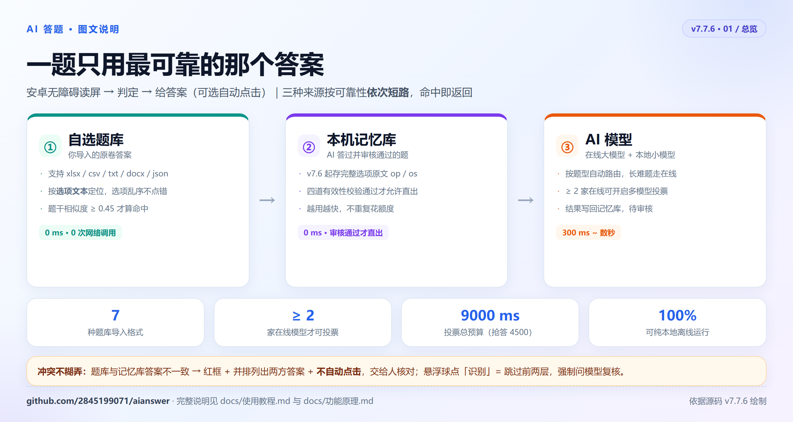
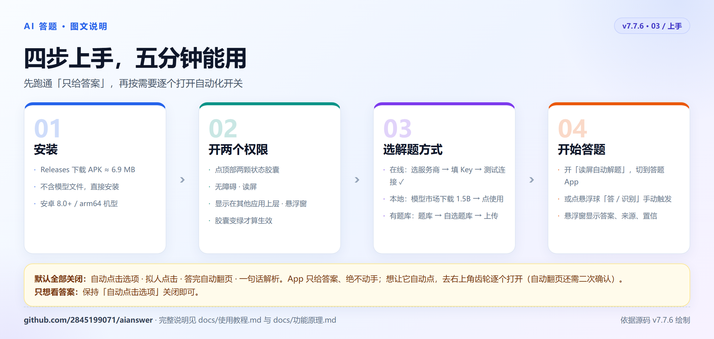
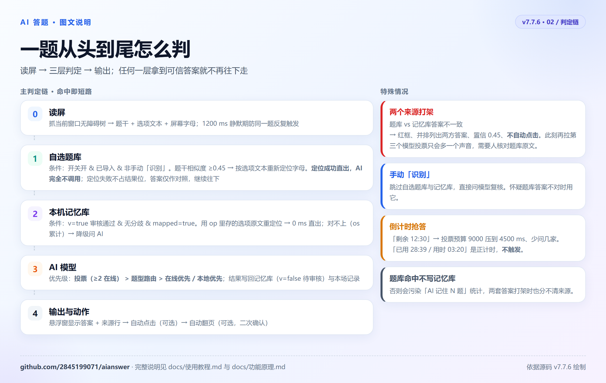
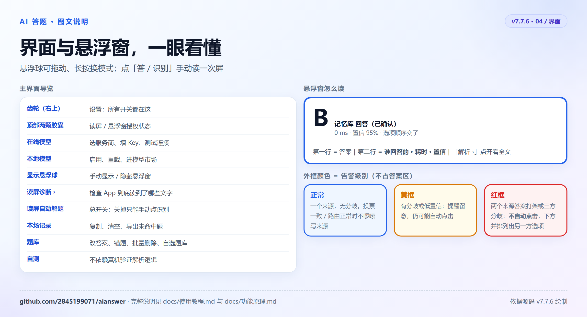
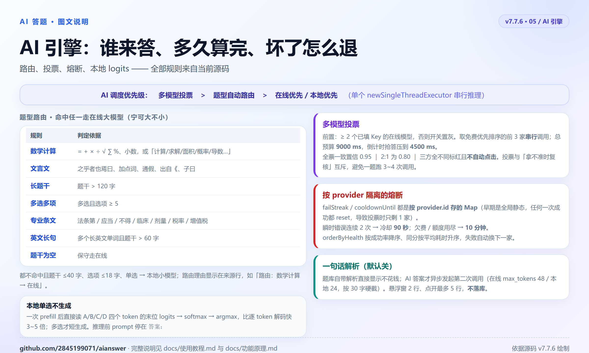
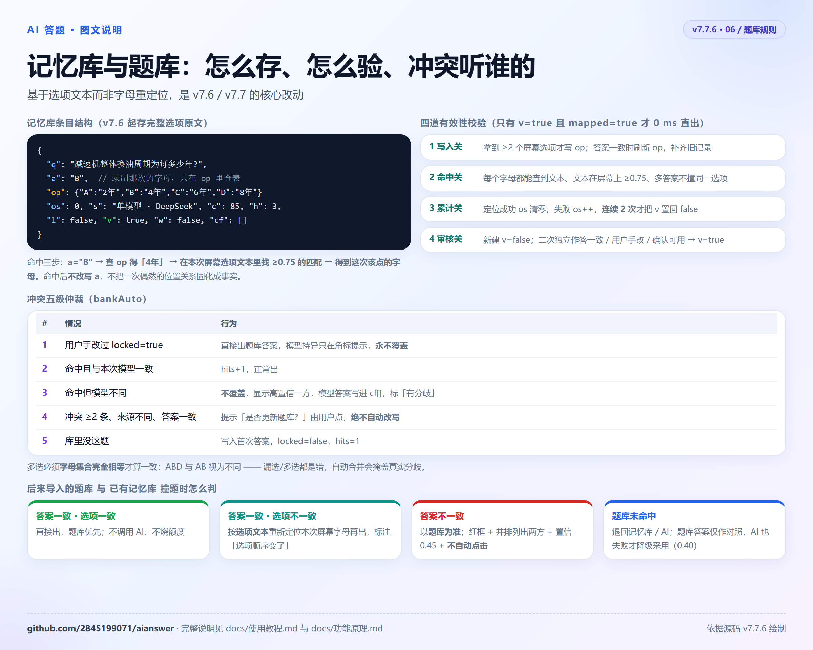

00 / 总览
一题只用最可靠的那个答案
三种来源不是并行投票，而是按可靠性从高到低短路：上一层拿到可信答案，就不调用下一层。 这也是为什么导入自己的题库是最省时、最省额度、最准的用法。

权威自选题库你导入的原卷答案，按选项文本定位，选项乱序也不会点错。
积累本机记忆库AI 答过且审核通过的题，存完整选项原文，越用越快。
兜底AI 模型在线大模型与本地小模型，按题型路由、可多模型投票。
冲突不糊弄：题库与记忆库答案不一致时，以题库为准，悬浮窗变红框、并排列出两方答案、不自动点击，
交给人核对，而不是再拉一个模型投票。悬浮球点「识别」可跳过前两层强制问模型。
01 / 上手
四步，五分钟能用
先跑通「只给答案」，再按需要逐个打开自动化。自动点击、拟人点击、自动翻页、一句话解析默认全部关闭， App 不会替你动手。

只开在线（最省事）在线模型卡片 → 选服务商 → 粘贴 Key → 测试连接 ✓ → 开「读屏自动解题」。
只开本地（断网可用）本地模型 → 模型市场下载 1.5B GGUF（约 1.07 GB，支持断点续传）→ 点「使用」。
有题库就先导入题库 → 自选题库 → 上传。命中 0 次网络调用、毫秒级出答案，也不怕限流。
02 / 判定链
一题从头到尾怎么判
读屏抓题干与选项文本 → 三层判定 → 输出。任何一层拿到可信答案就短路； 题库「命中但定位不到屏幕」不算命中，会继续往下走，题库答案只作为对照显示。

防误命中：题干相似度下限 0.45（同一份卷子相邻题常共用选项，只看选项分会点错）；
题干 ≥0.95 时豁免选项分。倒计时只认「剩余 12:30」，「已用 28:39 / 用时 03:20」是正计时，不会误触发抢答。
03 / 界面
界面与悬浮窗，一眼看懂
悬浮窗第一行是答案，第二行写清楚谁回答的 · 耗时 · 置信；告警画在外框上，不占答案区。 悬浮球可拖动、长按换模式。

正常（蓝框 / 无告警）一个来源、无分歧。投票一致或路由正常时不会啰嗦地写一堆来源。
黄框有分歧或低置信，提醒留意，仍可能自动点击。
红框两个来源答案打架或三方分歧：不会自动点击，下方并排列出另一方选项。
04 / AI 引擎
谁来答、多久算完、坏了怎么退
优先级是投票 > 题型路由 > 在线优先 / 本地优先。路由规则是纯规则判定，宁可大不小； 熔断按 provider 隔离，在线失败会自动换下一家或降级到本地。

本地单选不生成：一次 prefill 后直接读 A / B / C / D 四个 token 的末位 logits 取 argmax，
比逐 token 解码快 3~5 倍，也不会出现需要二次解析的长句子。投票总预算 9000 ms，倒计时抢答压到 4500 ms。
05 / 题库规则
记忆库与题库：怎么存、怎么验、冲突听谁的
v7.6 起记忆库存的是完整选项原文而不是屏幕字母，命中时用「字母 → 文本 → 本次屏幕重新定位」， 所以选项换序照样能答对；v7.7 又补上了双来源冲突判定。

四道校验写入关 / 命中关 / 累计关 / 审核关；只有 v=true 且 mapped=true 才允许 0 ms 直出。
五级仲裁用户手改过永不覆盖；答案分歧不覆盖，只记入候选；绝不自动改写题库。
撞题以题库为准答案一致但选项不一致 → 按文本重定位；答案不一致 → 红框、不自动点击。
06 / 全部文档
想深入，看这些
两份主文档覆盖了「怎么用」与「为什么这么做」，其余是各版本的设计与验证记录。全部随源码公开。
使用教程安装授权、两条上手路径、导入格式、设置项逐条说明、常见问题docs/使用教程.md ↗
功能原理读屏、版面解析、判定链、冲突仲裁、路由投票、点击翻页的具体实现docs/功能原理.md ↗
需求规格说明书 v7.1冲突仲裁、解析、路由、投票、模型市场、权限与技术选型docs/需求规格说明书-v7.1.md ↗
自选题库集成说明从「刷题助手·固定题库版」移植的解析与命中逻辑docs/自选题库集成说明.md ↗
v7.6 选项存储设计op / os 字段、按文本重定位、四道有效性校验docs/v7.6-记忆库选项存储.md ↗
v7.7 双来源与自动翻页题库/记忆库冲突判定、自动选择题与点下一题docs/v7.7-双来源判定与自动翻页.md ↗